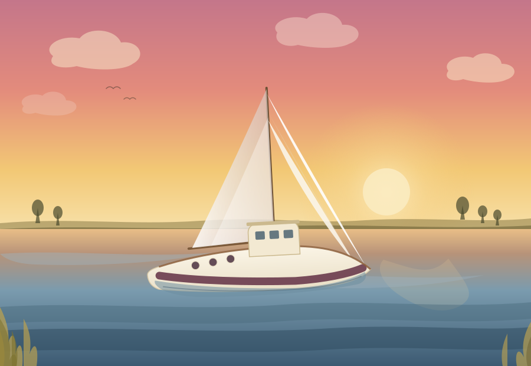
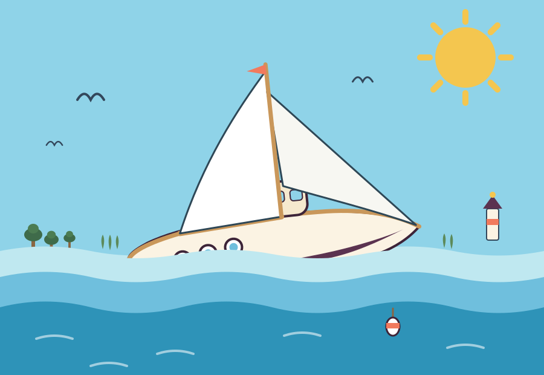
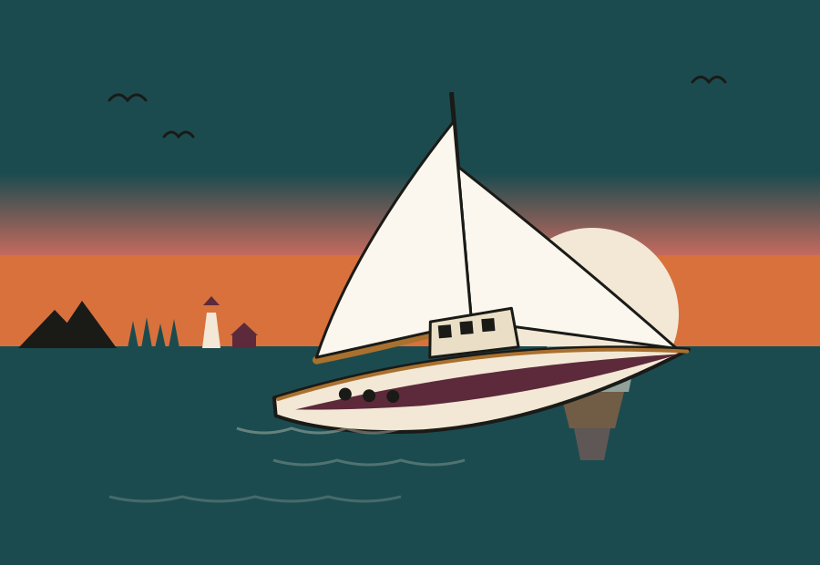
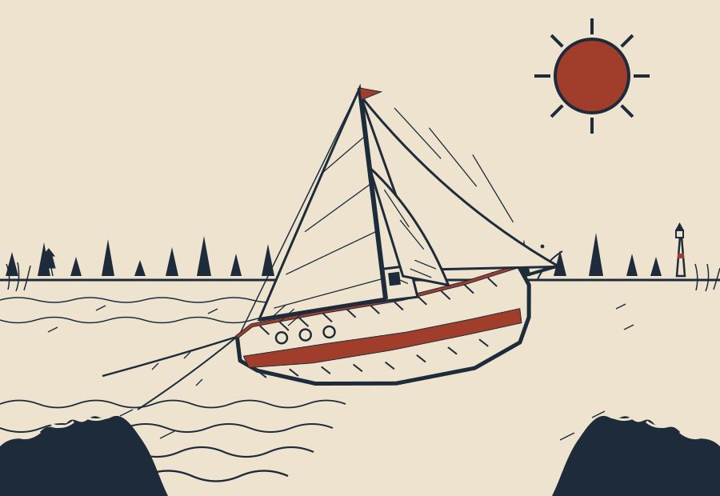
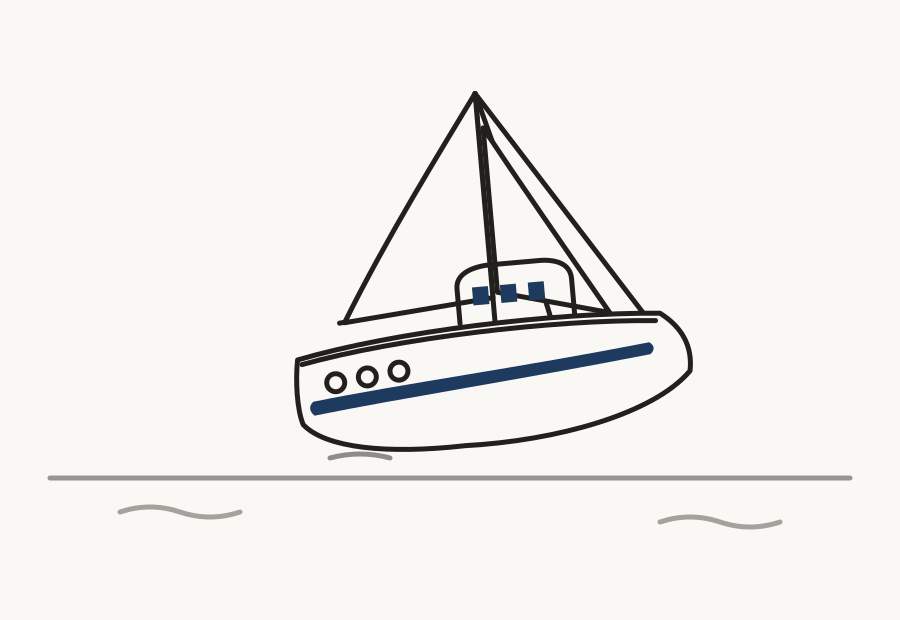

Illustration development — one direction, in progress
Chesapeake Watercolor is the direction going forward. This pass rebuilds the hull: the previous version had been flattened into a thin sliver with a self-intersecting kink at the stern. It's redrawn now with proper freeboard and a smooth bow-to-stern taper, a boot stripe sized to sit on the topsides rather than swallow the whole belly, and the keel dipping into the water at a modest overlap — not floating clear of it, not vanishing into it.

Chesapeake Watercolor
Hull rebuilt with proper freeboard and a smooth taper at bow and stern. The pilothouse now overlaps down into the hull instead of perching exactly on the deck line, so it reads as built into the boat rather than floating on top of it.
Other directions explored

Playful Flat Cartoon
Storybook-friendly, rounded and cheerful — puffed sails, a crab-pot buoy, sunny saturated color. Now sitting properly in the water, boot stripe mostly submerged.

Retro Travel Poster
Mid-century flat color with a dramatic banded sunset sky — bold, confident silhouette, minimal internal detail.

Nautical Woodblock
Ink-carved linocut texture in the spirit of an antique whaling print — hatched sails, a Hokusai-claw wave, one rust-red accent.

Minimalist Line Art
Single-weight continuous outline, huge negative space, one accent color reserved for the boot stripe. Reads as a mark as much as a scene.